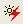
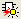
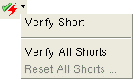

Short Isolation Toolbar
Icon |
Description |
 |
Highlight Short path. |
Highlight polygons in short cell context Highlight in Short Cell
Highlight in Top Cell (selection disabled) |
Enabled: Highlight in Short Cell —Highlight short polygons in the context of the cell the polygon is in. Disabled: Highlight in Top Cell —Highlight short polygons in the top cell.
Note: when Highlight in Short Cell is enabled in the Short Isolation Toolbar, the view will change to the selected cell even when No View Change is selected in the main toolbar. |
Highlight Previous, Current, and Next Polygon. |
|
Assign Polygons to Nets
|
Assign polygons to nets using an attached layout viewer. See “Assigning Net Labels to the Polygons in a Short”. |
 |
See “Verifying Short Repairs” for information on the requirements and process for running short verification. |